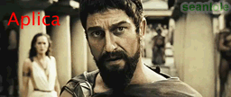
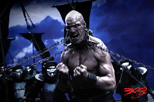

300
 De: La Frikipedia, la enciclopedia extremadamente seria.
De: La Frikipedia, la enciclopedia extremadamente seria.
De la serie cine para todos:
| Director
|
El que sobrevive al final.
|
| Productor
|
Papa du poulos
|
| Actores
|
Un tío, cuatro gatos, otro tío al que clonan 298 veces por ordenador y otro tío al que clonan otro montón de veces para actuar de enemigos.
|
| País
|
Spartaaaaaaaaaaa!
|
| Año
|
Alguno A.C.
|
| Presupuesto
|
Dos duros y unas cuantas lanzas de paloduz y chanclas de esparto
|
| Secuelas
|
Sí, te deja algunas, pero con intervención psicológica adecuada se te curan
|
«¡ESTO ES ESPARTAAAAA!»
~ Leónidas por nada en especial
«¡ESTO ES ESPARTAAAAA!»
~ Leónidas después de ver Deadliest Warrior
«¡ESTO ES FRIKIPEDIAAAAA!»
~ Leónidas Despues de ver la portada de frikipedia
Se dice de los 300 o 299 hombres que lucharon medio desnudos contra otros que no se lavaban hace muchos años. Los motivos de la batalla se desconocen unos dicen que lucharon por el jabón, otros dicen que ciertos soldados eran de moralidad dudosa y un poco homosexuales, unos pocos dicen que fue por cocaína (famosa droga de la antigüedad) y por las pastis (otra droga de la antigüedad que se usaba en fiestas).
Desarrollo de la batalla
 Leónidas, un poco cabreadito.
En inicio los guarros que no se lavan fueron a Esparta, con deseos de matar conseguir pasta y chicas buenas, pero los espartanos que al ver lo que podía pasar se enfundaron sus ropajes de batalla y cargaron a lo bruto. Debido a que estaban en enero y que los espartanos iban medio en pelotas para mostrarse (muchos apuntan que eran homos de cuidado) viriles, al llegar el momento de la batalla tenían las pelotas mas congeladas y mas pequeñas que las de una rata. En ese momento los guarros se acojonaron de ellos. y los 300 o los dudosos 299,5 huyeron despavoridos.

Bart cuervo cuando le dijeron que estaba en esparta.
Los guarros tomaron posiciones y se prepararon para asestar el golpe final a los espartanos, pero estos se habían comprado calzones de lana y resistieron como unos machotes se llevaron por delante a millones de soldados que llevaban otro millón de años sin lavarse.
A combate contra los inmortales tambien acudieron tespios, arcadios y tebanos (tambien en calzones).
En ese momento Jerjes y no es que fuera un cachondo y se pusiera de nombre sus risas. Se propuso a dar cera a esos chicharrones del norte pidió cita con su jefe, e intento seducirle con sus dos mil pendientes, casi lo consigue y en el momento en que le iba a dar la estocada anal este le pego tal hostia que le mando a la lucha.
Llegado un día, y tras la cita, y la posterior lucha se reanudaron los combates los 299,5 decidieron pasar del tema e invitaron a sus amigos soldados a fumar cocaína.
Así terminó la batalla Jerjes que acabo limpio y cabreado se busco un chulo y se prostituyo en chueca, el jefe de los espartanos se cogió unas vacaciones, dejo a su mujer y fue a buscar su verdadera orientación sexual que la encontró cuando un misil de tipo RPG le atravesó el culo.
Pero en verdad lo que ocurrio ya que los persas les rodearon empezaron a lanzarles un montoon de flechas que ocultaban el cielo y leonidas fue el ultimo en quedar en pie tambien le lanzan un monton de flechas que digo yo que con dos hubieran sobrado.
Y asi acabo la batalla victoria persa.
Personajes
La vida de todo espartano...
 Famoso
friki del ejército de Jerjes.
Espartanos
- Leónidas: Rey de los espartanos.
- La reina de los espartanos (Gorgo o algo así)
- Los 300 mejores amigos del gimnasio de Leónidas:
- Efialtes: Un jorobeta traidor más feo que picio y con gustos sadomaso. Luego está con los persas, bajo promesas de favores sexuales (esto va en serio, sale en la película)
- Capitan: otro homosexual mas a pesar de su larga edad
- Stelios: hijo del capitan homosexual (que raro)a pesar de su corta edad
Persas
Tíos realmente lastimosos, que sacan mil y una trampas (además de que son 500000 contra 300, más o menos) y ni así ganan)
- Jerjes: Líder de los persas hecho íntegramente de piercings que lo hacen inmortal. Aunque hable con pluma, es bisexual, ya que tiene cientos de baiarinas buenorras a su alrededor.
- Mardonio: Primo de Legolas, y al igual que él le gusta el arco. Es esbirro de Jerjes, aunque lo único que hace es presentarlo a los visitantes.
- Soldados mierdas: Tíos vestidos de moros con arcos, baratos y de usar y tirar. Mueren en su totalidad.
- Inmortales: Tíos vestidos con máscaras de plata y armaduras negras, clones mejorados (porque pueden respirar sin la máscara, que sólo es para quedar guay, y son inmortales, o sea, aunque mueren miles luego no falta ninguno) de Uruk-hai. Son los únicos que mantienen el tipo cuando atacan los otros, y los primeros que mataron a un solo espartano.
- Un tío loco que lo llevan dos Inmortales con cadenas, puesto que no saben que es de los suyos. Es calvo y pintado con ceniza, y se volvió loco tras recibir una Patada giratoria y sair vivo (pero no ileso, como podéis ver). Es el mayor rival del Niño loco alemán.
- Un tío gordinflas, de piel cobriza y con cuchillas en los brazos, que mata a los suyos sólo por que se aburre. Completa el trío de los gordos con Mark Henry y Big Daddy V.
- Tíos chinos con máscaras que tiran granadas futuristas que al final le dan a ellos mismos.
- Tíos en rinoceronte con armadura de pinchos.
- Tíos en elefante, que penosamente no son capaces de controlar a su montura y se caen por acantilados.
Armas
Espartanos
- Espadas de machote
- Calzones de lana (para ser el mas machote cuando hace frió)
- Grasa de machote (para ser escurridizo a las manos enemigas y ademas brillas ke te cagas)
- Escudo de machote (te protege de lanzas penetrantes)
- Patada de Leonidas al emisiario Persa
- Vergas de toro y bolas de chivo (sirven de amuleto y para auyentar a maradona y ronald McDonald)
Persas
- Mugre (con ella se hicieron los reyes de la antigüedad)
- Muchos percing.
- Máscaras guays.
¿Sabias qué...
- ...La película costó dos duros ya que se hizo solo en una habitación(cosa extraña ya que, ¿qué hacían 300 hombres homosexuales en una habiatación?.
- ...Leónidas era homosexual y tenia novio?
- ...Leónidas y Jerjes tuvieron un romance?
- ...y terminaron?
- ...y por eso Leónidas le tiró una lanza?
- ...esto es esparta?
Autor(es):
- Krusher
- Fordus
- Max Slug
- Epikurolibre
- Khazike Khashondo
- Azulejos
- ElInventor
- Megasoft
- Santa wii
- Anticristo2007
Frikipedia 2005-2016, Licencia
GFDL 1.2 - Extraído por FrikiLeaks